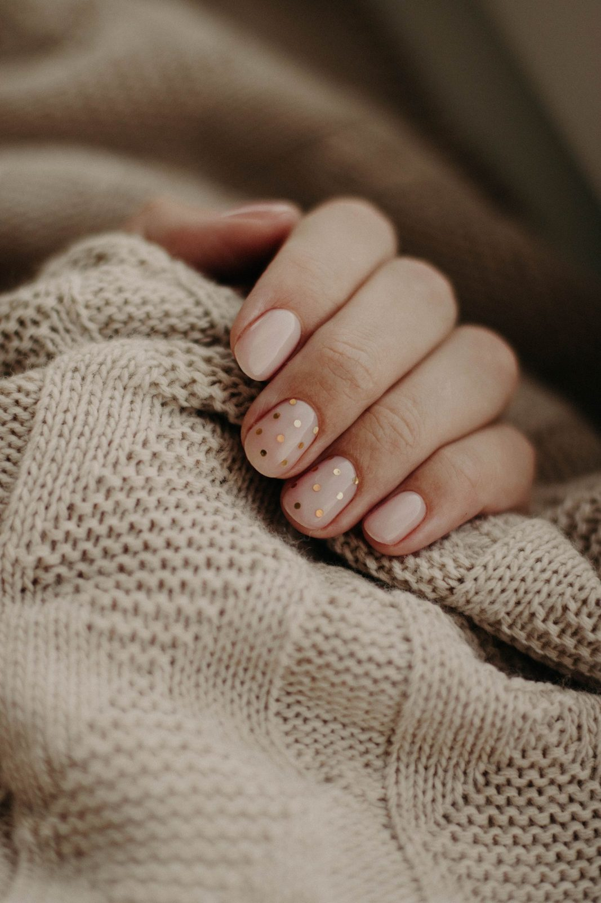
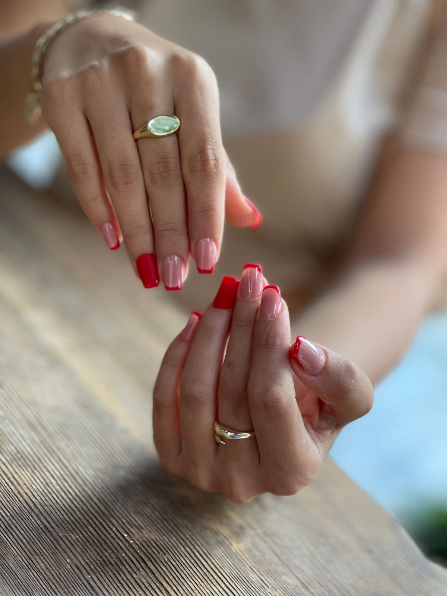
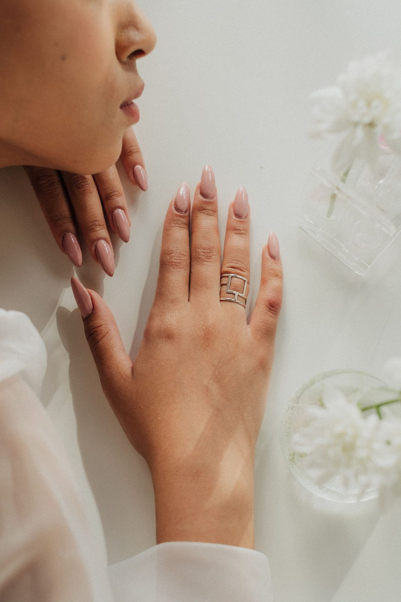

Inside the salon




Divine Nail & Tan is a nail salon at 3645 Gulf Shores Pkwy, Suite 105. Manicures, pedicures, acrylic and gel enhancements, dip powder and custom nail art, plus waxing.

A natural manicure. Stock photo.
Divine Nail & Tan sits on Gulf Shores Parkway in Gulf Shores. The salon offers manicures and pedicures, including collagen pedicures and restorative foot therapies, plus acrylic and gel enhancements, dip powder and custom nail art.
Waxing is also listed among its services. The salon does not publish a price list online, so call ahead for services and pricing.

